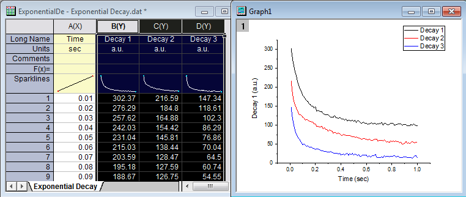
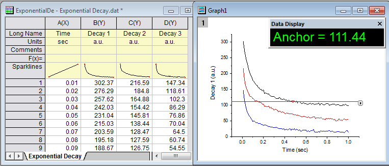
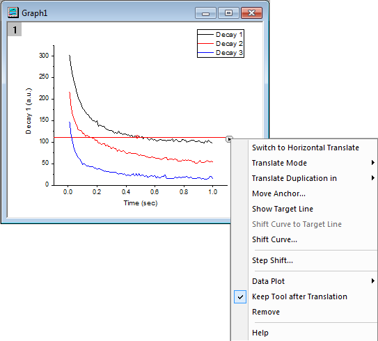
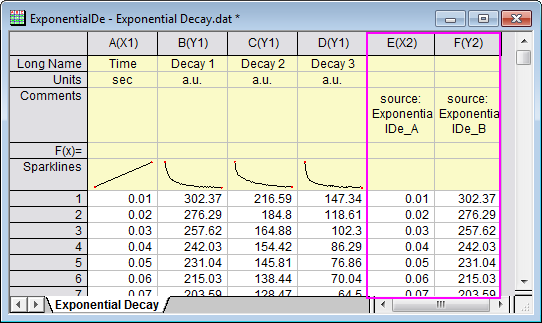
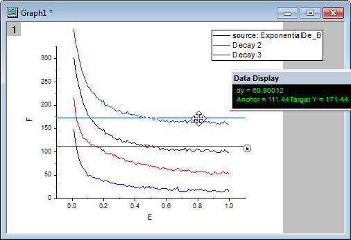
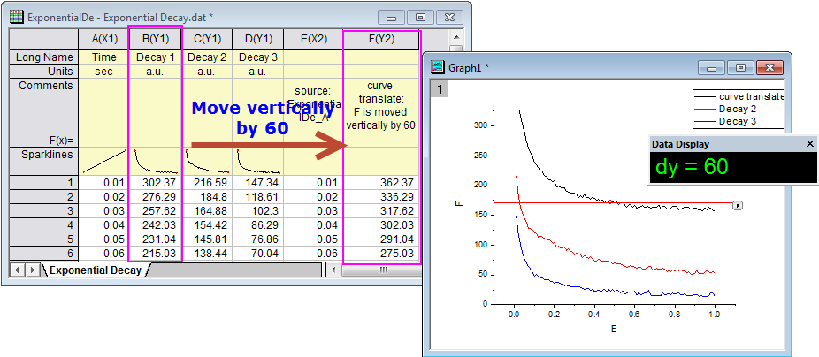
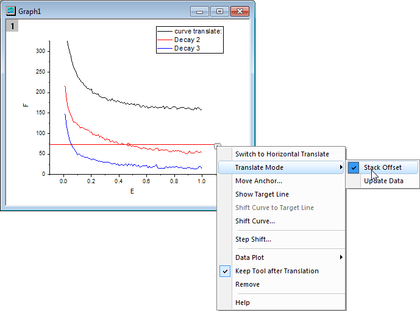
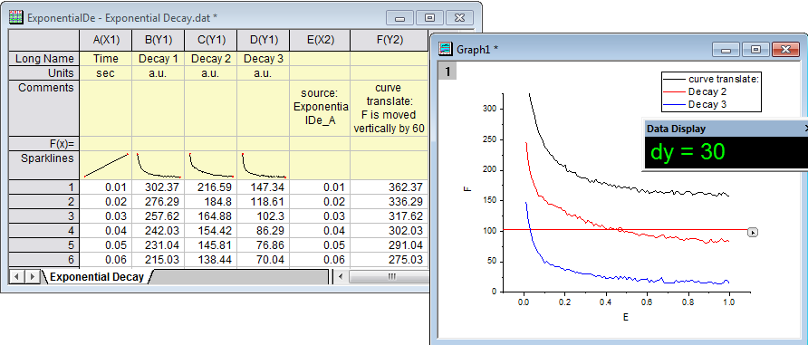
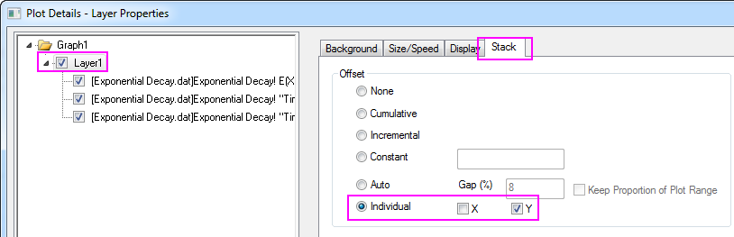
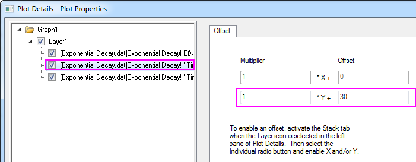
Dieses Hilfsmittel wird verwendet, um die aktive Kurve vertikal oder horizontal zu verschieben.
Um dieses Hilfsmittel zu verwenden:
Dieses Hilfsmittel fügt einen Anker und eine rote Linie zu der aktiven Kurve hinzu.
Dieses Hilfsmittel kann eine rote Linie mit einem Anker (ein kleiner roter Ring) zu der aktiven Kurve hinzufügen, so dass die gesamte aktive Datenzeichnung horizontal oder vertikal verschoben werden kann. Die Richtung der Verschiebung hängt davon ab, ob eine horizontale oder vertikale Übersetzung ausgewählt ist.
Sie können auf die Ankerlinie klicken und an ihr ziehen, um die aktive Datenzeichnung in eine neue Position zu verschieben. Außerdem können Sie die neue Position durch Ziehen des Ankers auf der Linie festlegen. Der Anker richtet sich immer wieder an der aktiven Kurve aus, wenn Sie die Linie verschieben.
Wenn Sie die Zeichnung in eine neue Position ziehen, aber die Verschiebung abbrechen wollen, lassen Sie die linke Maustaste nicht los und drücken Sie die rechte Taste. Lassen Sie dann die rechte Taste los und danach die linke. Die Kurve bleibt an der gleichen Stelle.
Hinweis: Wenn Sie eine Kurve übersetzen, werden die Quelldaten für die Kurve auch geändert.
| Zum vertikalen/horizontalen Übersetzen wechseln |
Wenn Sie Vertikal/Horizontal übersetzen verwenden, benutzen Sie dieses Element, um zu Horizontal/Vertikal übersetzen zu wechseln. |
|---|---|
| Übersetzungsmodus |
|
| Duplikation übersetzen in |
Diese Option ist nur verfügbar, wenn der Übersetzungsmodus auf Daten aktualisieren gesetzt ist. Wenn Sie Duplikation übersetzen in Neue/s Spalten/Blatt/Mappe auswählen, werden die Rohdaten der aktuellen Kurve in neuen Spalten/einem neuen Blatt/ einer neuen Mappe dupliziert. Die duplizierte Kurve wird beim Verschieben der Zeichnung aktualisiert. Wenn Sie die Option Duplikation übersetzen in Neue/s Spalten/Blatt/Mappe nicht wählen, verändert das Verschieben der Zeichnung in eine neue Position die Rohdaten im Quellarbeitsblatt. |
| Anker verschieben |
Diese Option öffnet den Dialog Anker verschieben. Sie können den Anker in eine spezifische Position mit Hilfe eines Datenindexes bzw. Werts verschieben. |
| Ziellinie zeigen |
Legen Sie fest, ob die Ziellinie gezeigt werden sollen. Wenn die Ziellinie gezeigt wird, können Sie die Ziellinie per Drag&Drop in die gewünschte Position ziehen und dann im Menü Kurve zur Ziellinie verschieben wählen, um die Kurve in die durch die Ziellinie definierte Position zu verschieben. |
| Kurve zur Ziellinie verschieben |
Diese Option ist nur aktiviert, wenn die Ziellinie gezeigt wird. Wenn sie ausgewählt ist, wird die aktuelle Kurve in die Position der Ziellinie übersetzt. |
| Kurve verschieben |
Der Dialog Kurve verschieben wird geöffnet, um die Ankerlinie mit Hilfe eines festgelegten Werts oder in eine neue Position bei einem festgelegten Wert zu verschieben (wie die Kurve). |
| Schrittverschiebung |
Der Dialog Schrittverschiebung wird geöffnet, indem Sie eine Schrittgröße für jede Übersetzung festlegen können. |
| Daten ändern |
Die aktive Zeichnung wird zum Durchführen der Übersetzung geändert. Wenn Sie eine Zeichnung im Ausklappmenü auswählen, wird die Ankerlinie in die Position der neuen Zeichnung verschoben. |
| Hilfsmittel nach Übersetzung beibehalten |
Legen Sie fest, ob dieses Hilfsmittel nach der Übersetzung behalten werden soll. |
| Entfernen |
Legen Sie fest, ob das Hilfsmittel zum Übersetzen der Kurve aus dem Diagramm entfernt werden soll. |
| Hilfe |
Klicken Sie auf diese Option, um das Dokument dieses Hilfsmittels zu öffnen. |
Wählen Sie im Ausklappmenü Anker verschieben, um diesen Dialog zu öffnen. Sie können den Anker in eine spezifische Position mit Hilfe eines Datenindexes bzw. Werts verschieben.
Hinweis: Wenn Sie den Anker mit Hilfe eines spezifischen Werts in eine Position verschieben, wird der Anker zu dem Datenwert verschoben, der dem spezifischen Wert am nächsten ist.
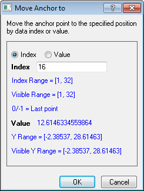
Sie können auch einen LabTalk-Ausdruck oder einen Ausdruck eingeben, der eine von Origins statistischen Standardfunktionen einbindet. Einzelheiten finden Sie UserGuide:Reference_Lines#At_Axis_Value_2 hier. Bitte beachten Sie, dass der Anker zum nächstliegenden Nachbarpunkt verschoben wird, wenn sich bei dem Wert kein Punkt befindet.
Wählen Sie im Ausklappmenü die Option Schrittverschiebung, um diesen Dialog zu öffnen und den Schritt für jede Übersetzung festzulegen. Jedes Mal, wenn Sie die Ankerlinie ziehen, wird sie um ein Mehrfaches der Schrittgröße verschoben, die der Differenz X (wenn horizontale Übersetzung ausgewählt ist) oder Y (wenn vertikale Übersetzung ausgewählt ist) zwischen der ursprünglichen und der verschobenen Position am nächsten ist.
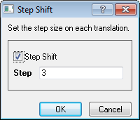
Dieses Beispiel zeigt, wie Sie die Kurve vertikal mit zwei verschiedenen Modi verschieben: Daten aktualisieren und Stapelversatz. Übersetzen Sie die erste Kurve mit dem Modus Daten aktualisieren und die zweite Kurve mit dem Modus Stapelversatz.